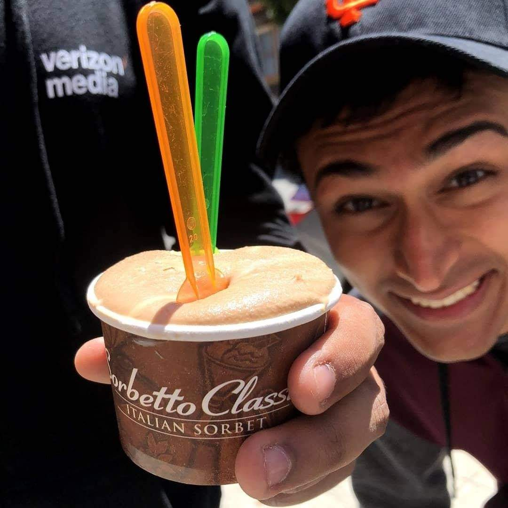

Ojas Ahuja
Email
,
LinkedIn
Research
ASPECTNEWS: Aspect-Oriented Summarization of News Documents
.
Ojas Ahuja, Jiacheng Xu, Akshay Gupta, Kevin Horecka, Greg Durrett.
ACL 2022
.
Accelerating Natural Language Understanding in Task-Oriented Dialog
.
Ojas Ahuja, Shrey Desai.
ACL 2020 ConvAI workshop
.
Projects
copykey
— Turns a picture of a physical key into a working 3D-printed copy.